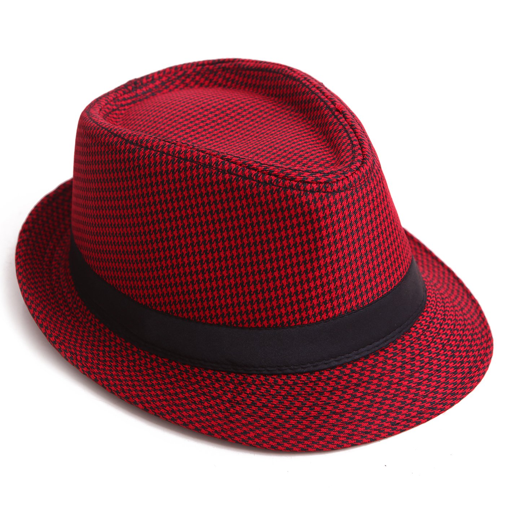
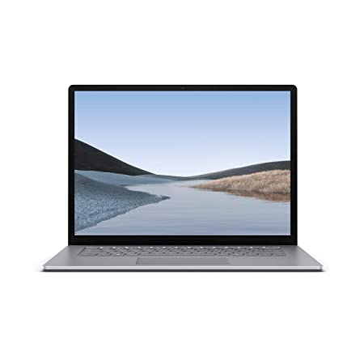
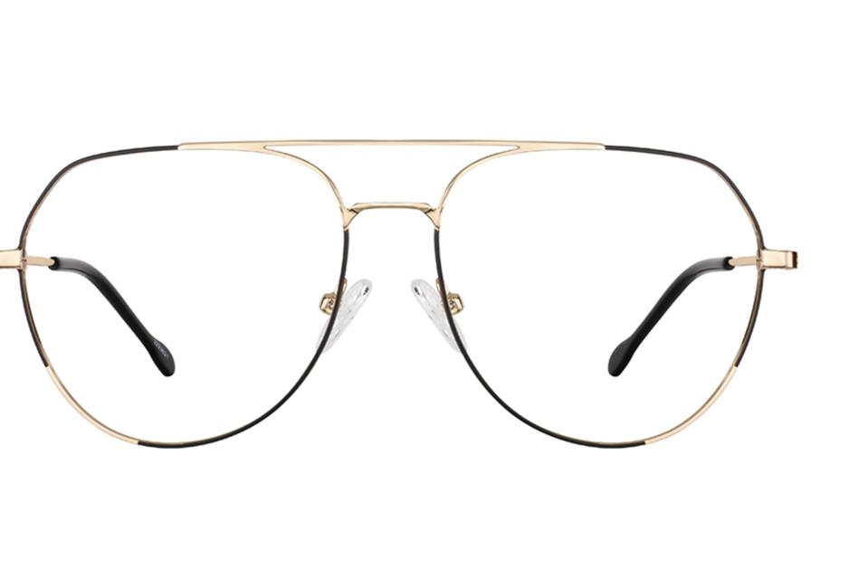
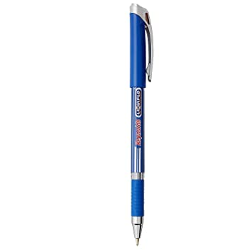
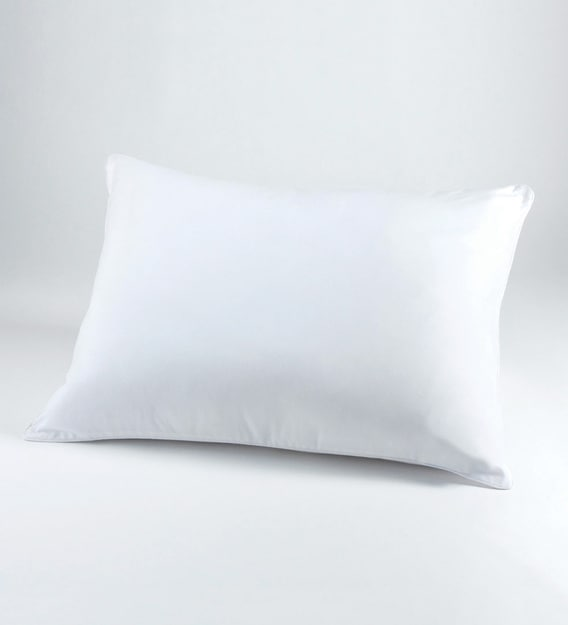
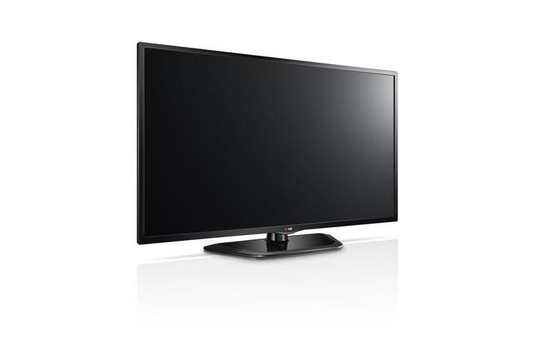
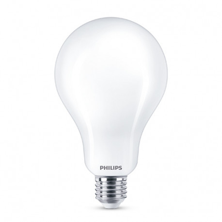
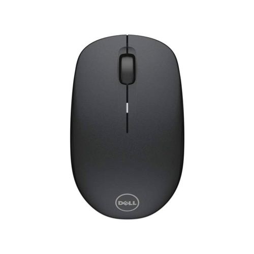

CASE STUDY BETWEEN MICROSOFT AZURE,MOBILNET MODEL AND GOOGLE LENS
Microsoft Azure
VS
Mobilenet model
VS
.png)
Google lens
-
Test Image -

- Test Image - 
- Test Image - 
- Test Image - 
- Test Image - 
-
Test Image -

- Test Image - 
- Test Image - 
- Test Image - 
- Test Image - 
Output on Microsoft Azure - a close up of a bottle
Output on - Mobilenet Model - syringe
Output on - Google lens - Pleasent home spray, water bottle
Result -
Microsoft Model is more accurate
Output on Microsoft Azure - a close up of a hat
Output on - Mobilenet Model - cowboy hat, ten-gallon hat
Output on - Google lens - The best gangster hat
Result -
Google lens is more accurate
Output on Microsoft Azure - a screen shot of a computer
Output on - Mobilenet Model - desktop computer
Output on - Google lens - laptop
Result -
Google lens is more accurate
Output on Microsoft Azure - a close up of sunglasses
Output on - Mobilenet Model - tape player
Output on - Google lens - Eyeglasses
Result -
Google lens is more accurate
Output on Microsoft Azure - a close up of a pen
Output on - Mobilenet Model - ballpoint, ballpoint pen, ballpen, Biro
Output on - Google lens - Reynolds Liquiflow ball pen
Result -
Google lens is more accurate
Output on Microsoft Azure - a coffee mug
Output on - Mobilenet Model - Water jug
Output on - Google lens - Coffee mug
Result -
Microsoft and Google lens are more accurate
Output on Microsoft Azure - a pillow on a bed
Output on - Mobilenet Model - lampshade, lamp shade
Output on - Google lens - pillow
Result -
Microsoft and Google lens are more accurate
Output on Microsoft Azure - a flat screen tv sitting on tp of a tevevision
Output on - Mobilenet Model - television, television system
Output on - Google lens - Samsung TV
Result -
Google lens is more accurate
Output on Microsoft Azure - a close`up of a light bulb
Output on - Mobilenet Model - wooden spoon
Output on - Google lens - Philips light bulb
Result -
Google lens is more accurate
Output on Microsoft Azure - a close up of a mouse
Output on - Mobilenet Model - mouse, computer mouse
Output on - Google lens - Dell WM 126 mouse
Result -
Google lens is more accurate